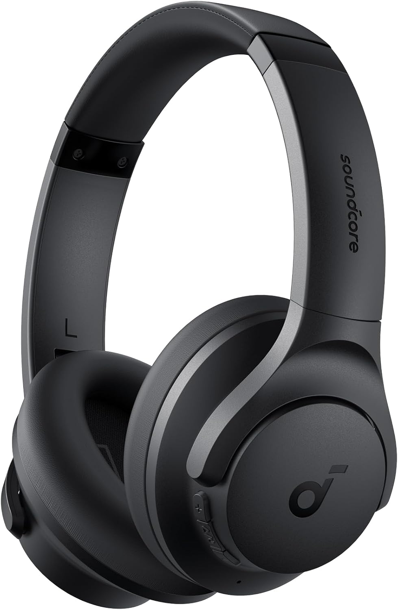
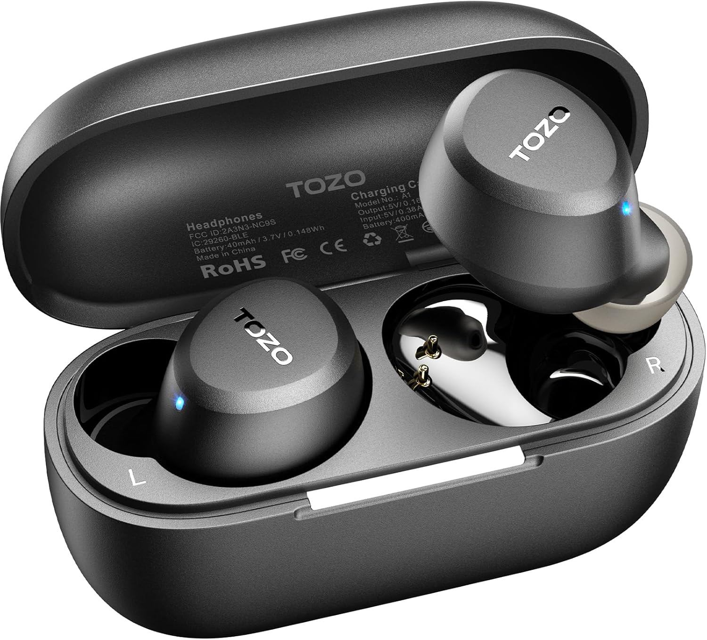
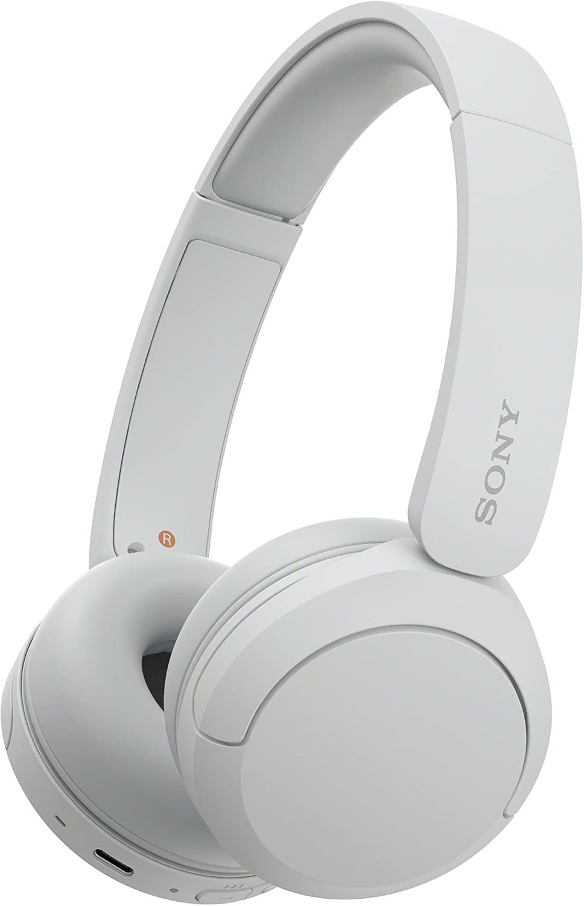
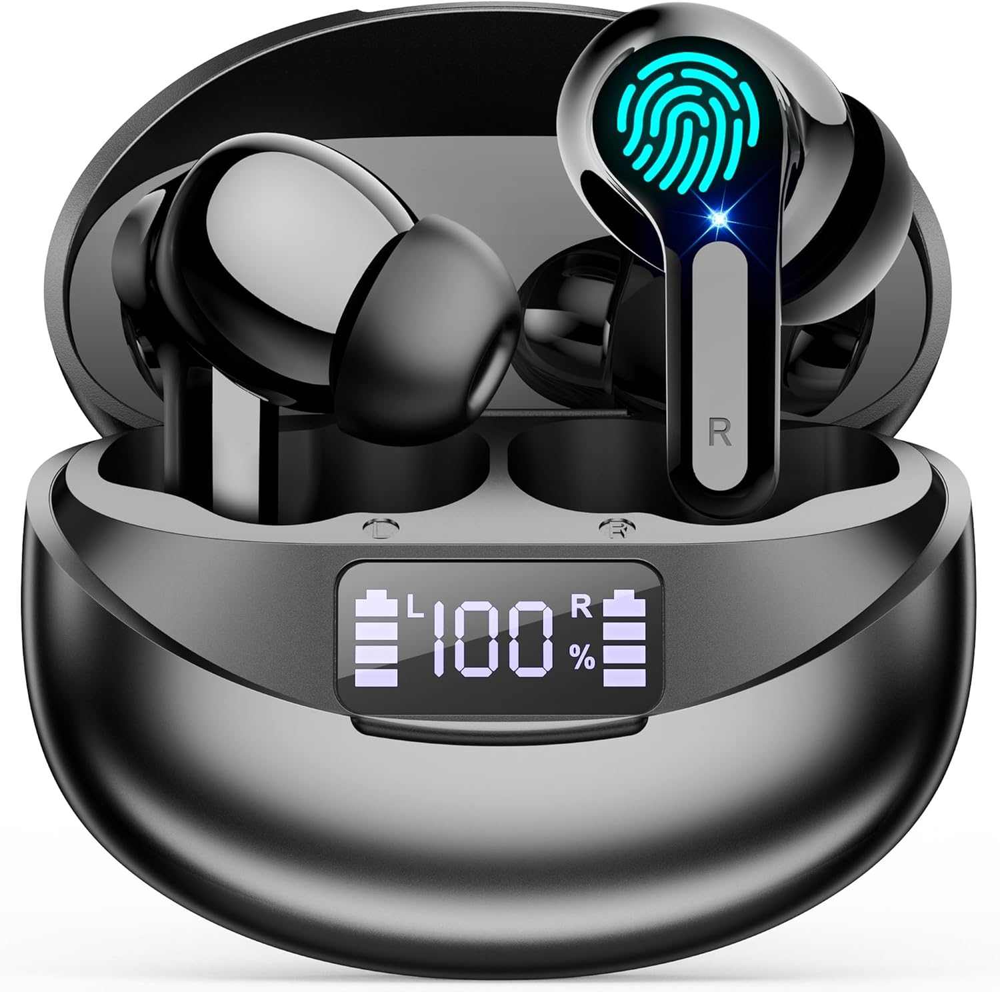
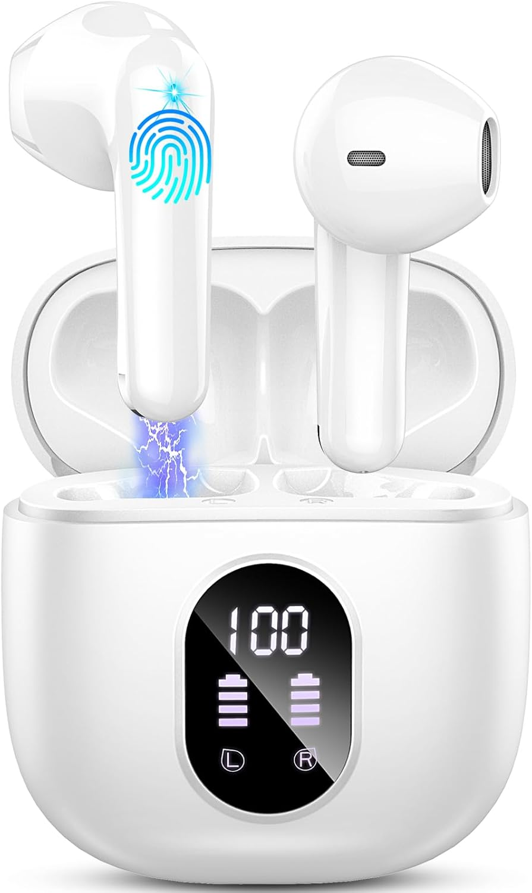

TOZO A1
Ligeros, compactos y muy equilibrados por precio. Buena opción para uso diario, paseos, deporte y música sin complicaciones.
Ver en AmazonSelección visual rápida para elegir mejor sin perder tiempo. Auriculares recomendados para música, trabajo, llamadas, deporte y uso diario.
Ver mejores auriculares✔ Comparativa clara · ✔ Catálogo visual · ✔ Compra directa en Amazon
Ligeros, compactos y muy equilibrados por precio. Buena opción para uso diario, paseos, deporte y música sin complicaciones.
Ver en Amazon
Muy buena compra si prefiere diadema cómoda, batería larga y una marca fiable para música, llamadas y trabajo.
Ver en Amazon
Alternativa muy llamativa si busca pantalla LED, cancelación de ruido y muchas funciones por un precio bajo.
Ver en Amazon
Buena opción para quien prioriza autonomía larga, pantalla visible y uso diario con llamadas y música.
Ver en Amazon
Opción sencilla y económica para escuchar música, hacer llamadas y tener unos auriculares resultones sin gastar mucho.
Ver en Amazon
La mejor opción si quiere subir de nivel: diadema, cancelación activa, app y mejor experiencia para viajes, trabajo y música.
Ver en Amazon